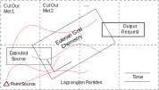
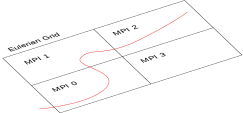

Overview
- What does NAME look like?
- The view from here...
- Parallelism: a quick overview
- Shared memory and distributed memory
- ...and how these work in NAME...
- Results
- Volcanic Ash
- Chemistry
- Greenhouse Gas
- The future...
Schematically...
Parallelism
- Shared memory ("threads")
- Pros: "easy"; incremental
- Cons: limits you to 1 node; efficiency can be elusive
- Standard model: OpenMP
- Compiler chops up loops
- Distributed memory ("processes" or "tasks")
- Pros: allows larger problems; better time-to-solution
- Cons: incremental development more difficult
- Standard model: Message Passing Interface (MPI)
- Programmer must distribute work
Thread parallelism
Source generates particles
Update particles...
!$omp parallel do
do n = 1, nParticles
call particleUpdateMe(n, metData, ...)
end do
Output
Particles may contribute to output...

Reference: https://upload.wikimedia.org/wikipedia/commons/9/97/Caricature_gillray_plumpudding.jpg
Distributed parallelism (1)
A copy of the source generates a subset of particles...
Update particles...
do n = 1, nParticlesLocal
call particleUpdateMe(n, metData, ...)
end do
Output (again)
Particles may contribute to output...
- Solution
- Each tasks forms its own contribution to output
- Communicate (via messages) and add contributions (a reduction)
- Single MPI task performs output to file
Chemistry
- Problem
- Chemistry performed on an Eulerian grid, so ...
- All particles in a given Eulerian cell must be present on same MPI task
- Solution
- Distribution of particles must respect particle position
- Source generates particles on relevant MPI task
- Particles which move may have to be moved between MPI tasks
Domain Decomposition
- In fact:
- Group all particles crossing a particular boundary into single message
Other concerns
Reproducability
- Code gives same result independent of threads/tasks
- But not the same result as previous versions ...
- Random number generator initialisation per particle
- Serial algorithms replaced by parallel algorithms
Efficiency
- Speed up is limited by the fraction of code that is serial
- Speed up usually: $S = T_1 / T_N$
- (Parallel) Efficiency: $E = S / N$
Volcanic Ash Benchmark
- Askja (Iceland)
- NWP data: global UM at 3 hours
- Smaller: 750,000 particles; Larger: 7,500,000 particles

Chemistry Benchmark
- UK plus north-west Europe (Eulerian grid at c. 10km)
- NWP data: c. 0.5$^\circ$ in horizontal, 50 vertical levels at 4 hours
- STOCHEM with 42 species

Greenhouse Gas Benchmark
- UK plus surrounding region (backwards in time)
- NWP data: 1.5km, 57 vertical levels at 1 hour
- Original 480,000 particles (c. 30 minutes 1 node); 48 million < 4 hours

Summary
Aim of the work:
- Produce a functional distributed memory version
- More memory allows more particles:
- Allow increased size/resolution while maintaining time-to-solution
- Maintain statistical accuracy
Exposed a number of bottlenecks:
- Output
- ASCII could be replaced by netCDF
- Release of particles
- Requires a parallel implementation
- Reading large NWP meteorological data sets
- Improved threaded parallelism should help
Additional slides...
Data Structures
type (Particle_)
integer (int64) :: iUP ! unique identifier
real (pos_t) :: x(3) ! position
integer (int32) :: iCoord ! coordinate system
...
type (Extra_), pointer :: extra ! optional extra data
double (real64) :: mass(:) ! chemical species
end type Particle_
Memory requirement
Particle_ ! c. 128 bytes
Extra_ ! c. 400 bytes (if required)
mass(:) ! typically 42 species (if required)
Tests
Link to test coverage